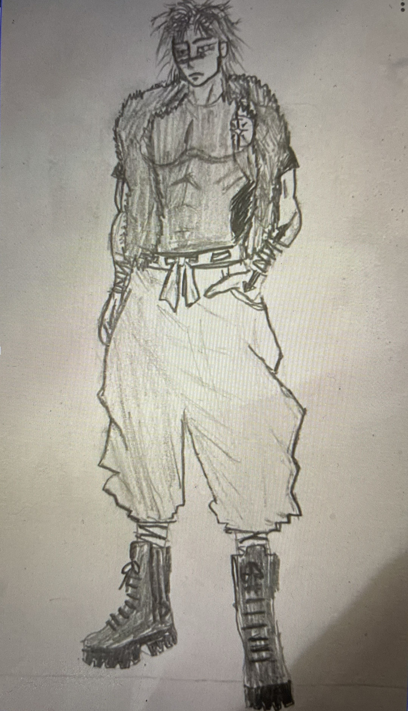
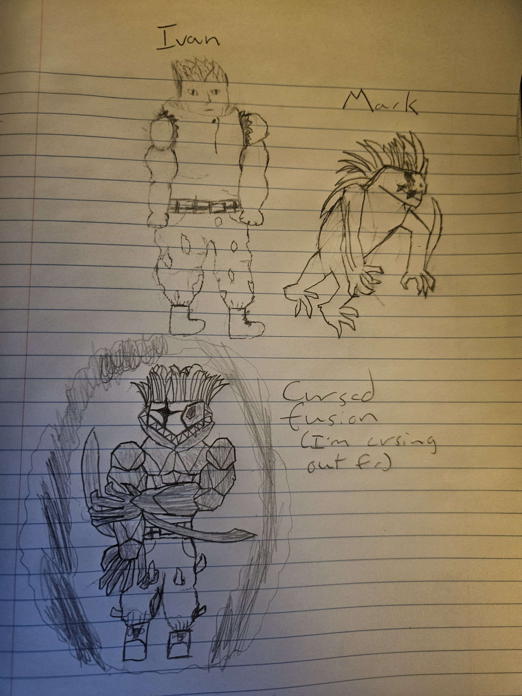

Character Showcase Deck
Hovering on any character profile card below to flip it and review their details.

Iris Tang
Jujutsu N Dragons Series
Hair color: Black
Eye color: Brown
Height: 5”2
Skin color: Pale
Gender: Female
Notable Features: A small dog sewn onto her top school uniform for memory of her family pet
Curse Energy Color: Purple
Born not being able to speak, at a young age was despised and isolated by parents, was only given a drawing board & markers. One day accidentally used her curse technique on the family dog. So her parents sent her to the worse public school they could find.
Shy and introverted. With antisocial tendencies.
English, Asian (unspecific which Asian language)
Drawing
| Max HP: | 26 |
| Armor Class: | 1d4 + 2 |
| Max Curse Energy (CE): | 6 |
| Base Movement: | 30ft |
| Max Carry Weight: | 120 |
- School Uniform (Armor)
- G4 Dagger (M. Hand)
- G4 Baton (M. Hand)
- G4 Shuriken (Ranged)
- G4 Scythe (M. Hand)

Azrael Griffin
Jujutsu N Dragons Series
Hair color: Blond
Eye color: Blue
Height: 6”2
Skin color: White
Gender: Male
Notable Features: The tattoo on his chest is his own personal sigil, a combination of a star and sword, representing strength, and wisdom.
Curse Energy Color: His Cursed Energy is a different color depending on which shikigami’s technique he is using. Sometimes, Azrael’s eyes and hair will change based on his used shikigami too:
- - Dawn: Light grey coloration
- - Meridian: Golden-white coloration
- - Dusk: dark purple coloration
- - Midnight: black coloration
The Griffin Family has a long and rich history of Jujutsu Sorcery. One of the greatest and most expansive sorcerer families, they originate from France, with the lineage tracing all the way back to the Dark Ages. Currently they reside in Austria. Though, the family has married in many techniques hoping to pass them down, this they have very little of their original blood. Azrael Griffin, was one of three brothers born to his father, who had the Energy Conversion Technique, and his mother who had no technique but could control her cursed energy. Energy Conversion is one of the least common Griffin Family inherited techniques, and has only appeared four times. Azrael’s technique was thought dead before he inherited it, as the last woman who used it lived right at the end of the heian era. being so rare and thought dead, it gave Azrael lots of attention from the european sorcery world since a young age. Naturally, the notoriety gave him a lot of opportunity, but also painted a target on his back. the world. Azrael was forced to leave his home when the clan head, his grandfather, told him not to use his technique, as something dangerous resided within it. Seeking to freely use his technique, he ran away to America and came to enroll in jujutsu low.
Generally a good person, Azrael is kind and supportive, and he seeks only to have freedom to do as he wants. He likes to be a shield for those who are weaker. Azrael will willingly do what it takes to make sure that what he believes is right comes to pass. If he has to break some rules to accomplish his goals, he’ll do so without hesitating. Azrael is never alright watching others be hurt in his place, but he also hungers for power. He loves playing the game of trying to be the strongest, but he will still always support his compatriots no matter what.
Being European, and specifically French, in origin, he is fluent in English, French, and German (for his home country Austria).
Coming from a rich family, he has trained his whole life in the use of great sword and rapier. Azrael is also a talented singer.
| Max HP: | 34 |
| Armor Class: | 1d4 + 4 |
| Max Curse Energy (CE): | 5 |
| Base Movement: | 30ft |
| Max Carry Weight: | 180 |
- School Uniform (Armor)
- Heirloom Sword (M. Hand)
- G2 Illusionists Crossbow (Magazine Fed) (O. Hand)

Ivan
Jujutsu N Dragons Series
Hair color: Black
Eye color: Hazel
Height: 6"
Skin color: White
Gender: Male
Notable Features: Wears a school uniform with torn sleeves and ripped pant legs. When transformed body up to his mouth is spiky and made of steel and hands have sharp claws.
Curse Energy Color: Silver
Russian exchange student. mom is a semi-first grade sorcerer and father was the ancient disaster curse of brutality, who reincarnated as a jujutsu sorcerer via a cursed object. When his father revealed that he was a curse, Ivan's mom took Ivan and left to America. Ivan's mom is now retired from sorcery and Ivan's father now searches to reunite with his son.
Quiet and tends to keep to himself but more than willing to die saving a friend.
English and Russian
Simple weapons
| Max HP: | 30 |
| Armor Class: | 1d4 + 4 |
| Max Curse Energy (CE): | 5 |
| Base Movement: | 30ft |
| Max Carry Weight: | 180 |
- School Uniform (Armor)
- G4 Tonfas (M. Hand)
- G3 The Sixty-Seventh Gauntlets (M. Hand)